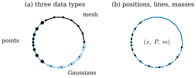
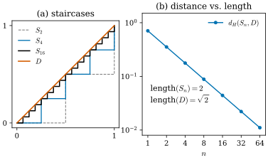

46.1 Why Varifolds?
Goals
- mesh, point cloud, Gaussian 묶음을 모두 “(위치, 방향 없는 tangent line 또는 tangent plane, mass)의 목록”으로 적고, smooth surface도 같은 꼴 \(\varphi \mapsto \int_M\varphi(x, T_xM)\,dA\)로 볼 수 있음을 설명할 수 있다.
- staircase 예로, 점의 위치만 비교하는 거리(Hausdorff distance)로 가깝다는 것과 길이·tangent·curvature까지 가깝다는 것이 다르다는 것을 수치로 보일 수 있다.
- orientation을 버리는 이유를 데이터 쪽과 극한 쪽에서 하나씩 말할 수 있다.
- 네 논문 [BLM17], [BLM22], [GeoSplat25], [ManifoldGS26]이 각각 무엇을 varifold로 푸는지 한 문장씩 말하고, 그것을 이 장의 어느 절이 준비하는지 짚을 수 있다.
Prerequisites
- Tour: tangent plane과 unit normal(Definition 0.3.3), point cloud의 PCA normal estimation(Figure 0.3.4), mean curvature와 넓이의 변화율((0.4.3))
- Part IV: 납작한 Gaussian의 가장 짧은 축이 normal이라는 것(Section 29.1), Hausdorff distance로 수렴해도 넓이가 수렴하지 않을 수 있다는 것(Section 31.2)
- Track 2: polygon의 curvature가 vertex의 turning angle에 모인다는 것(Definition 32.3.1, Proposition 32.3.6)
Motivation
Part IV와 Track 2에서 surface의 curvature를 두 가지 데이터에서 계산했다. triangle mesh에서는 vertex마다 mean curvature normal이 cotan 공식으로 나왔고(Definition 40.3.3), 3DGS에서는 납작한 Gaussian의 가장 짧은 축이 normal 역할을 했다(Section 29.1). 그런데 cotan 공식은 triangle이 있어야 쓸 수 있고, Gaussian의 normal은 Gaussian 하나만 본다. 연결 정보가 없는 point cloud나 Gaussian 묶음에서 mean curvature는 무엇인가? 그 값이 점점 촘촘해지는 데이터에서 smooth surface의 값으로 간다는 것은 무엇을 증명해야 하는 말인가?
이 장이 읽기를 준비하는 네 논문은 이 질문에 같은 도구로 답한다. 그 도구가 varifold다. 이 절은 정의 없이 두 가지만 보인다. 첫째, 서로 다른 데이터가 사실은 같은 종류의 목록이다. 둘째, “가깝다”를 점의 위치만으로 재면 길이와 curvature에 대해 아무것도 말할 수 없다. 이 두 관찰을 함께 만족시키는 대상이 varifold이고, 정의는 Section 46.4에서 한다.
One Surface, Many Data Structures
Figure 46.1.1(a)는 unit circle 하나를 세 데이터로 나누어 나타낸 것이다. 오른쪽 위 \(t \in [0, 2\pi/3]\)은 mesh(여기서는 내접 polygon, edge 6개), 왼쪽 \(t \in [2\pi/3, 4\pi/3]\)은 고르지 않게 놓인 point cloud 9점, 아래 \(t \in [4\pi/3, 2\pi]\)는 납작한 2D Gaussian 5개다. 데이터마다 각 조각에서 읽을 수 있는 것을 적어 보자.
- mesh: edge 하나는 위치(edge 위의 점들), 방향(edge가 놓인 직선), 양(edge의 길이 \(2\sin(\pi/18) = 0.3473\))을 준다.
- point cloud: 점 하나는 위치만 준다. 방향은 이웃 점에서 PCA로 추정하고(Figure 0.3.4), 양은 점이 대표하는 몫이다. 그림에서는 이웃 점과의 중점 사이 arc length(Voronoi cell의 길이)를 썼고, 점의 크기가 그 몫이다. 점이 몰린 곳은 몫이 작다.
- Gaussian: 중심이 위치, 긴 축이 방향이다(3D에서는 가장 짧은 축이 normal이고 긴 두 축이 tangent plane이다). 양이 무엇인지는 분명하지 않다. opacity인가, 축 길이의 곱인가? 이 질문은 Section 46.8과 Chapter 50의 주제다.
세 데이터가 모두 주는 것은 결국 (위치 \(x_i\), 방향 \(P_i\), 양 \(m_i\))의 목록이다. Figure 46.1.1(b)는 데이터의 종류를 지우고 이 목록만 그린 것이다. 각 항목은 \(x_i\)를 지나고 방향이 \(P_i\)이며 길이가 \(m_i\)에 비례하는 짧은 선분이다. mesh의 edge는 그대로 이어진 선분이고, point cloud와 Gaussian의 항목은 떨어진 선분이다. 셋이 같은 원을 같은 방식으로 덮고 있다.
방향 \(P_i\)에는 화살표가 없다는 점에 주의하자. edge는 어느 쪽으로 읽어도 같은 직선이고, PCA normal과 Gaussian의 짧은 축은 부호가 정해지지 않는다(Section 29.1). 그래서 \(P_i\)는 unit vector가 아니라 직선(3D에서는 평면) 자체다. 직선과 평면을 숫자로 다루는 방법, 곧 orthogonal projection matrix로 나타내는 방법은 Section 46.3에서 다룬다.

smooth surface는 어떤가? surface를 아주 작은 조각으로 나누면 조각마다 위치 \(x\), tangent plane \(T_xM\), 넓이 \(dA\)가 있다. 곧 smooth surface는 (위치, tangent plane, 넓이)의 “연속적인 목록”이다. 목록을 비교하는 가장 단순한 방법은 위치와 방향의 함수 \(\varphi(x, P)\)를 하나 골라 목록 전체에서 더해 보는 것이다. 이런 \(\varphi\)를 test function(시험함수)이라 부른다. smooth surface \(M\)과 목록 \(\{(x_i, P_i, m_i)\}\)에 대해 더한 값은 각각
이다. 두 식은 같은 일을 한다. 함수 \(\varphi\)를 받아 숫자를 돌려준다. surface를 “점들의 집합”이 아니라 “test function에 숫자를 돌려주는 기계”로 보는 것이 이 장 전체의 관점이다. 위치만의 함수 \(\varphi(x)\)를 넣으면 넓이(길이)가 어디에 얼마나 있는지를 묻는 것이고(Section 46.2의 measure), 방향까지 넣으면 그곳의 tangent가 무엇인지도 묻는 것이다(Section 46.4의 varifold).
Example 46.1.1 (one circle, three lists). unit circle \(x(t) = (\cos t, \sin t)\)의 unit tangent는 \(\tau = (-\sin t, \cos t)\)이다. tangent line을 \(\tau\)의 성분으로 가장 간단히 묻는 test function은 \(\varphi(x, P) = \cos^2\theta_P\)다. 여기서 \(\theta_P\)는 직선 \(P\)가 \(x\)축과 이루는 각이고, \(\theta_P\)와 \(\theta_P + \pi\)가 같은 값을 주므로 방향 없는 직선의 함수다(Section 46.3에서 이것이 projection matrix의 성분 \(P_{11}\)임을 본다). 원에서는 \(\cos^2\theta_P = \sin^2t\)이다.
- smooth: \(V_M(1) = 2\pi = 6.2832\), \(V_M(\varphi) = \int_0^{2\pi}\sin^2t\,dt = \pi = 3.1416\).
- 내접 정 \(N\)각형(edge의 길이 \(2\sin(\pi/N)\)): edge 위에서 \(\varphi\)는 상수이므로 \(V(1) = 2N\sin(\pi/N)\), \(V(\varphi) = N\sin(\pi/N)\)이다(\(N \ge 3\)). \(N = 6\)이면 \(6\)과 \(3\), \(N = 24\)이면 \(6.2653\)과 \(3.1326\)이다.
- 같은 간격의 \(N\)점, 몫 \(2\pi/N\), tangent line \(P_i\): \(V(1) = 2\pi\), \(V(\varphi) = \tfrac{2\pi}{N}\sum_i\sin^2t_i = \pi\)이다(\(N \ge 3\)이면 정확히).
세 목록이 같은 두 질문(“길이가 얼마인가”, “그 가운데 \(x\)축 방향 성분은 얼마인가”)에 거의 같은 답을 준다. 이것이 세 데이터가 같은 원을 나타낸다는 말의 뜻이다. 이 생각을 모든 test function으로 넓힌 것이 수렴의 정의다(Section 46.2, Section 46.4).
Verification: verify/v-46-1-why-varifolds.py
Close in Position Is Not Close as a Surface
세 목록이 “거의 같다”는 것을 어떻게 재야 하는가? 가장 먼저 떠오르는 것은 점들 사이의 거리다. 두 집합 \(A, B\)의 Hausdorff distance \(d_H(A, B)\)는 \(A\)의 모든 점이 \(B\)에서 \(r\) 이내에 있고 \(B\)의 모든 점이 \(A\)에서 \(r\) 이내에 있는 가장 작은 \(r\)이다. 3D vision의 Chamfer distance도 같은 정신이다. 다음 예는 이것만으로는 부족하다는 것을 보인다.
Example 46.1.2 (the staircase). \(D\)를 \((0, 0)\)에서 \((1, 1)\)까지의 대각선 선분이라 하자. \(S_n\)은 같은 두 점을 잇는 계단이다. 오른쪽으로 \(1/n\), 위로 \(1/n\)을 \(n\)번 되풀이한다.
- 위치: \(S_n\)의 점에서 \(D\)까지의 거리는 계단의 모서리에서 가장 크고, 그 값은 \(\tfrac{1}{\sqrt2\,n}\)이다. \(D\)의 점에서 \(S_n\)까지의 거리는 이보다 작다. 그래서 \(d_H(S_n, D) = \tfrac{1}{\sqrt2\,n} \to 0\)이다. \(n = 16\)이면 \(0.0442\)다.
- 길이: \(S_n\)은 길이 \(1/n\)인 가로 조각 \(n\)개와 세로 조각 \(n\)개이므로 길이가 언제나 \(2\)다. \(D\)의 길이는 \(\sqrt2 = 1.414\)다. 길이는 수렴하지 않는다.
- tangent: \(S_n\)의 tangent line은 어디서나 가로 또는 세로이고, \(D\)의 tangent line(\(45^\circ\))과 언제나 \(45^\circ\)를 이룬다. \(n\)을 키워도 나아지지 않는다.
- curvature: polygon의 curvature는 vertex의 turning angle에 모인다(Definition 32.3.1). \(S_n\)에는 모서리가 \(2n - 1\)개 있고 각각 \(\pm\pi/2\)만큼 돈다. turning angle의 절댓값의 합은 \((2n - 1)\pi/2\)로 발산한다(\(n = 16\)이면 \(48.69\)). \(D\)는 곧아서 \(0\)이다.
점의 위치로는 \(S_n \to D\)이지만, 길이, tangent, curvature 가운데 어느 것도 \(D\)의 값으로 가지 않는다.
Verification: verify/v-46-1-why-varifolds.py
Figure 46.1.2(a)는 \(n = 2, 4, 16\)인 계단과 \(D\)다. \(n\)이 커질수록 계단(검정)은 대각선(주홍)에 바짝 붙어서, \(n = 16\)이면 이 크기의 그림에서 거의 구별되지 않는다. (b)는 log-log 축에서 \(d_H(S_n, D)\)가 기울기 \(-1\)인 직선으로 줄어드는 것을 보인다. 그 옆의 글자가 이 그림의 요점이다. 거리가 \(100\)배 줄어드는 동안 길이는 \(2\)에서 움직이지 않는다.

이 예에서 “가깝다”를 재는 기준을 네 단계로 나누어 보면 이 장의 순서가 보인다.
| what is compared | \(S_n\) as \(n \to \infty\) | \(D\) | where |
|---|---|---|---|
| the set of points | \(d_H(S_n, D) \to 0\) | — | this section |
| how much length is where | density \(\sqrt2\) along \(D\) | density \(1\) | 46.2 |
| length and tangent line together | half horizontal, half vertical | all at \(45^\circ\) | 46.4 |
| curvature (first variation) | total turning \(\to \infty\) | \(0\) | 46.5 |
둘째 줄의 뜻은 이렇다. 길이가 \(D\) 위의 어디에 얼마나 있는지만 보면, \(S_n\)의 길이는 \(D\)를 따라 고르게 퍼지지만 \(D\)의 길이 요소마다 \(\sqrt2\)배씩 있다. 셋째 줄은 그 길이의 절반이 가로 방향, 절반이 세로 방향이라는 것이다. 이 두 계산은 뒤의 절에서 정의를 갖추고 다시 한다. 아래로 갈수록 더 많은 것을 비교하고, 그만큼 수렴하기 어렵다. 네 논문이 쓰는 기준은 셋째 줄(varifold로 가깝다)이다. 넷째 줄은 미묘하다. first variation이라는 “적분된” curvature는 셋째 줄의 수렴을 따라 수렴하지만, 점마다 읽을 수 있는 curvature 값은 따라오지 않는다(Section 46.5). point cloud에는 그런 값이 처음부터 없다. 이것이 [BLM17]의 출발점이다.
Why Forget the Orientation?
Figure 46.1.1의 목록에서 \(P_i\)는 방향 없는 직선이었다. 화살표가 있는 tangent(또는 부호가 정해진 normal)를 쓰지 않는 이유는 두 가지다.
- 데이터가 주지 않는다. PCA normal도, Gaussian의 가장 짧은 축도 부호가 없다. 부호를 맞추려면 이웃끼리 부호를 전파하거나(Figure 0.3.4 바로 앞의 문단, [Hoppe92]) camera 방향 같은 추가 정보를 써야 하고, 얇은 판이나 교차하는 surface에서는 그것도 실패한다.
- 극한에서 정보가 사라지지 않는다. 납작해지는 ellipsoid를 생각하자. 윗면의 바깥쪽 normal은 위를, 아랫면은 아래를 향한다. normal에 넓이를 곱해 더하면 닫힌 surface에서는 언제나 \(0\)이다. 그래서 부호가 있는 기술은 극한에서 아무것도 남기지 않는다. 방향 없는 평면으로 기술하면 윗면과 아랫면이 같은 평면을 주므로, 극한은 “disk 두 겹”으로 남는다(Exercise 46.1.4). 3DGS에서 양면에서 보이는 얇은 벽이 이런 경우다.
부호를 버린 대가도 있다. surface가 어느 쪽을 감싸는지(안과 밖)는 varifold에서 읽을 수 없다. 대신 교차, triple junction, 여러 겹처럼 orientation을 줄 수 없는 대상도 같은 틀에 들어온다. 부호를 지키는 measure-theoretic 대상은 current라 부르고, 이 장에서는 쓰지 않는다.
What the Four Papers Do
네 논문은 모두 데이터를 (위치, 방향 없는 plane, mass)의 목록, 곧 discrete varifold로 보고 시작한다. 그 다음에 하는 일이 다르다. 아래는 각 논문의 저자들이 Introduction에서 밝힌 목표를 한 문장으로 줄인 것이다. 자세한 해설은 각 장에서 한다.
- [BLM17]: point cloud, voxel, polyhedral surface를 discrete varifold로 다루고, 그 위에서 mean curvature를 정의한다. 문제는 point cloud의 first variation(넓이의 미분)이 measure가 아니라는 것이고, 답은 first variation과 mass를 kernel로 부드럽게 한 뒤 비를 취하는 것이다(approximate mean curvature). cotan 공식이 이 틀의 특수한 경우라는 것도 보인다. → Chapter 47
- [BLM22]: 같은 일을 mean curvature가 아니라 second fundamental form 전체에 대해 한다. Hutchinson의 curvature varifold에서 출발해 약한(weak) second fundamental form을 정의하고, point cloud에서 계산할 수 있는 근사판과 그 수렴을 보인다. → Chapter 48
- [GeoSplat25]: 3DGS의 Gaussian 중심을 point cloud varifold로 보고 [BLM22]의 근사 second fundamental form으로 principal curvature를 추정한다(또 하나의 manifold 기반 추정기도 있다). 그 curvature로 초기화, 최적화, densification을 제약한다. → Chapter 49
- [ManifoldGS26]: surface 같은 Gaussian 하나하나를 (중심, covariance가 주는 tangent plane, opacity와 별개인 mass)의 항목으로 보고, Gaussian 묶음을 discrete varifold로 해석한다. split, clone, prune이 이 varifold를 바꾸지 않도록 mass를 보존하는 규칙과 오차 bound를 준다. → Chapter 50
이 장의 나머지 절은 이 문장들에 나온 낱말을 차례로 준비한다. measure와 수렴(46.2), 방향 없는 plane(46.3), varifold와 mass(46.4), first variation과 generalized mean curvature(46.5), second fundamental form의 약한 정의(46.6), kernel로 부드럽게 하기와 varifold 사이의 거리(46.7), Gaussian을 기하로 읽기(46.8)다. 네 논문이 무엇을 주고받는지는 Section 46.9에서 지도로 정리한다.
Summary
- mesh, point cloud, Gaussian 묶음은 모두 (위치 \(x_i\), 방향 없는 tangent plane \(P_i\), mass \(m_i\))의 목록이고, smooth surface는 (위치, tangent plane, 넓이 \(dA\))의 연속적인 목록이다. 둘 다 test function \(\varphi(x, P)\)에 숫자 (46.1.1), (46.1.2)를 돌려주는 대상으로 볼 수 있다.
- staircase \(S_n\)은 Hausdorff distance로 대각선 \(D\)에 수렴하지만 길이(\(2\) 대 \(\sqrt2\)), tangent(가로·세로 대 \(45^\circ\)), curvature(turning angle의 절댓값 합 \((2n - 1)\pi/2\) 대 \(0\))는 수렴하지 않는다(Example 46.1.2).
- 방향을 버리는 이유는 데이터가 부호를 주지 않고, 부호가 있는 기술은 극한에서 지워질 수 있기 때문이다.
- 네 논문은 모두 데이터를 discrete varifold로 보고, 그 위에서 mean curvature([BLM17]), second fundamental form([BLM22]), 3DGS의 기하 제약([GeoSplat25]), split·clone에서 보존되는 mass([ManifoldGS26])을 다룬다.
다음 절에서는 표의 둘째 줄, 곧 “길이(넓이)가 어디에 얼마나 있는가”를 정확한 말로 만든다. 그것이 measure다. Dirac mass와 Hausdorff measure를 정의하고, point cloud가 circle에 “수렴한다”는 것을 test function으로 정의한 뒤, staircase의 길이가 \(D\) 위에서 밀도 \(\sqrt2\)로 퍼진다는 것을 계산한다.
Quick check
Exercise 46.1.1 ★ \((0, 0)\)에서 \((a, b)\)(\(a, b \gt 0\))까지 오른쪽과 위로만 가는 계단은 단의 수와 폭에 상관없이 길이가 \(a + b\)임을 보여라. 선분 \(D\)가 \(x\)축과 각 \(\theta\)를 이룰 때 계단의 길이와 \(D\)의 길이의 비를 \(\theta\)로 쓰고, 그 최댓값과 최솟값을 구하여라.
Solution
가로 조각의 길이를 모두 더하면 \(x\)좌표의 총 증가량 \(a\)이고, 세로 조각의 길이를 모두 더하면 \(b\)이다. 계단은 이 두 종류뿐이므로 길이는 \(a + b\)다. \(D\)의 길이는 \(\sqrt{a^2 + b^2}\)이고 \(a = \abs{D}\cos\theta\), \(b = \abs{D}\sin\theta\)이므로 비는 \(\cos\theta + \sin\theta\)(\(0 \le \theta \le \pi/2\))이다. \(\theta = 0, \pi/2\)에서 최솟값 \(1\)(계단이 곧 선분), \(\theta = \pi/4\)에서 최댓값 \(\sqrt2\)다. Example 46.1.2는 최댓값의 경우다. 3D에서 같은 계산을 하면 축에 나란한 face로 만든 계단의 넓이는 평면의 넓이의 \(\abs{n_1} + \abs{n_2} + \abs{n_3}\)배다.
Verification: verify/v-46-1-why-varifolds.py
Exercise 46.1.2 ★ \([0, 1]\) 위의 zigzag \(Z_n\)은 \((0, 0)\), \((\tfrac{1}{2n}, \tfrac{1}{2n})\), \((\tfrac{2}{2n}, 0)\), \((\tfrac{3}{2n}, \tfrac{1}{2n})\), …, \((1, 0)\)을 잇는 polygonal path다. \(d_H(Z_n, [0, 1])\), \(Z_n\)의 길이, \(Z_n\)의 tangent line을 구하고 Example 46.1.2와 비교하여라.
Solution
\(Z_n\)의 점에서 \([0, 1]\)까지의 거리는 꼭대기에서 가장 크고 \(\tfrac{1}{2n}\)이다. \([0, 1]\)의 점은 모두 \(Z_n\)에서 그보다 가깝다. 그래서 \(d_H = \tfrac{1}{2n} \to 0\)이다. 조각은 \(2n\)개이고 각각 길이 \(\tfrac{\sqrt2}{2n}\)이므로 길이는 언제나 \(\sqrt2\)이고 \(1\)로 가지 않는다. tangent line은 \(+45^\circ\)와 \(-45^\circ\)가 번갈아 나오고, 길이의 절반씩을 차지한다. staircase와 같은 현상이다. 위치는 수렴하지만 길이는 \(\sqrt2\)배로 남고, tangent는 두 방향으로 반씩 갈라진다.
Verification: verify/v-46-1-why-varifolds.py
Exercise 46.1.3 ★ unit square \([0, 1]^2\)의 boundary를 변마다 \(N\)점(\(N\)등분한 조각의 중점, 몫 \(1/N\), tangent line은 그 변의 방향)으로 나타낸 목록에서 Example 46.1.1의 \(V(1)\)과 \(V(\varphi)\)(\(\varphi = \cos^2\theta_P\))를 구하여라. 비 \(V(\varphi)/V(1)\)은 unit circle과 같은가? \([0, a]\times[0, b]\)의 boundary에서는 어떤가?
Solution
\(V(1)\)은 몫의 합 \(4N\cdot\tfrac1N = 4\)(둘레)다. 가로 변의 점은 \(\theta_P = 0\)이라 \(\varphi = 1\), 세로 변의 점은 \(\varphi = 0\)이므로 \(V(\varphi) = 2\)다. 비는 \(\tfrac12\)로 circle의 \(\pi/2\pi\)와 같다. 그러나 이것은 우연이 아니라 symmetry 때문이다. \([0, a]\times[0, b]\)이면 \(V(1) = 2a + 2b\), \(V(\varphi) = 2a\)이고 비는 \(\tfrac{a}{a + b}\)다. 이 비는 “길이로 가중한 \(\cos^2\theta_P\)의 평균”이므로, tangent line의 distribution이 \(90^\circ\) 회전에 대해 symmetric(정사각형, 원)이면 \(\tfrac12\)이고, 가로로 긴 직사각형이면 \(1\)에 가깝다. 같은 \(V(1)\)을 가진 두 목록을 \(V(\varphi)\)로 구별할 수 있다는 것이 방향까지 담는 test function의 쓸모다.
Verification: verify/v-46-1-why-varifolds.py
Exercise 46.1.4 ★★ ellipsoid \(E_\varepsilon = \{x^2 + y^2 + z^2/\varepsilon^2 = 1\}\)(바깥쪽 unit normal \(\mathbf{N}\))에서 넓이 \(A_\varepsilon\), \(\int_{E_\varepsilon}\mathbf{N}\,dA\), \(\int_{E_\varepsilon}\mathbf{N}\mathbf{N}^{\mathsf T}\,dA\)가 \(\varepsilon \to 0\)에서 어디로 가는지 말하여라. 방향 없는 기술(\(\mathbf{N}\mathbf{N}^{\mathsf T}\)는 \(\mathbf{N}\)과 \(-\mathbf{N}\)에 같은 값을 준다)과 부호가 있는 기술(\(\mathbf{N}\)) 가운데 어느 것이 극한의 “disk 두 겹”을 기억하는가?
Solution
\(E_\varepsilon\)은 납작해지면서 unit disk의 윗면과 아랫면으로 가므로 \(A_\varepsilon \to 2\pi\)(disk 넓이 \(\pi\)의 두 배)다. 닫힌 surface에서 \(\int\mathbf{N}\,dA = 0\)이다(상수 vector field \(\mathbf{c}\)에 divergence theorem을 쓰면 \(\inner{\mathbf{c}}{\int\mathbf{N}\,dA} = \int_{\text{inside}}\divg\mathbf{c} = 0\)). 그래서 부호가 있는 기술은 언제나 \(0\)이고 극한에 아무것도 남기지 않는다. 반면 윗면에서 \(\mathbf{N} \approx e_3\), 아랫면에서 \(\mathbf{N} \approx -e_3\)이고 둘 다 \(\mathbf{N}\mathbf{N}^{\mathsf T} \approx e_3e_3^{\mathsf T}\)이므로 \(\int\mathbf{N}\mathbf{N}^{\mathsf T}\,dA \to 2\pi\,e_3e_3^{\mathsf T}\)다. 가장자리의 띠는 넓이가 \(0\)으로 가므로 기여하지 않는다. 수치로는 \(\varepsilon = 0.1\)에서 \(A = 6.4722\), \((3,3)\) 성분 \(6.1557\), \((1,1)\)과 \((2,2)\) 성분 \(0.1582\)이고, \(\varepsilon = 0.01\)에서 \(6.2865\), \(6.2805\), \(0.0030\)이다(\(2\pi = 6.2832\)). 방향 없는 기술이 “disk 두 겹”을 기억한다. \(\mathbf{N}\mathbf{N}^{\mathsf T} = I - P\)(\(P\)는 tangent plane으로의 orthogonal projection)이므로 이것은 곧 tangent plane으로 기술하는 것이다(Section 46.3).
Verification: verify/v-46-1-why-varifolds.py